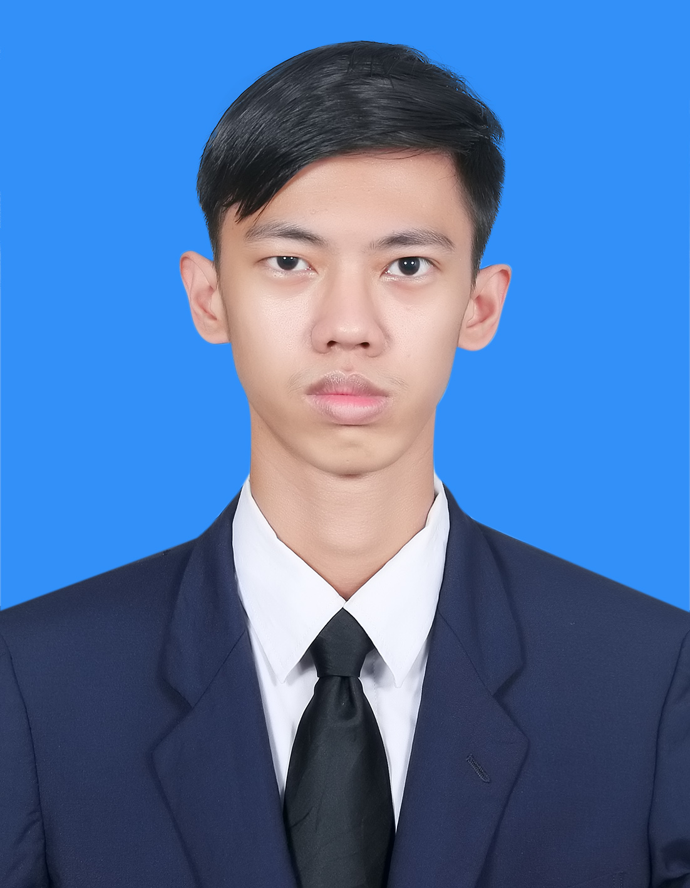

Ing Kea Meng

Summary
I am an easy-going person who can work and participate with teammates to
complete a perfect project. In additions, I am a responsible person who
prepare ahead of time to get my work done in timely manner. Moreover, I am
looking forward to applying for this position to improve my communication
skills, which enables to easily talk with strangers. Furthermore, I am
ready to face more challanges.
Education
- Bachelor of Software Development at AUPP
- Khmer Diploma at Toun Fa High School
- Chinese Diploma at Toun Fa High School
- General English Program at ACE
Work Experience
- Administrator at Smile Society Foundation
- Operation Team at Sala University Fair
- Interpreter at 8th GAC
- General Team at ACE Graduation Ceremony
Skills
- Python
- Web Development
- JAVA
Awards and Certifications